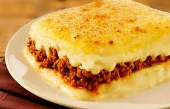

Bem-vindos à doceria do JB, Aqui você encontra uma variedade de doces deliciosos, feitos com ingredientes de alta qualidade e muito carinho. Explore nosso catálogo e encontre o doce perfeito para você.

Escondidinho de batata com carne moída
R$ 26,96
Ingredientes:
- 6 a 8 batatas cozidas e amaçadas (purê)
- 300g de queijo mussarela
- 400g de carne moída refolgada ao molho de tomate (tempere de acordo com sua preferência )
MODO DE PREPARO:1h
- faça o purê de batatas e separe
- prepare a carne moída não muito molhada
- em um refratário coloque uma camada de purê de batata, carne moída, um poouco de queijo, purê de batata, carne moída e o restante do queijo
- Adicione os ovos um de cada vez, batendo bem após cada adição.
- leve ao forno até que doure o queijo
- pode também por queijo parmesão